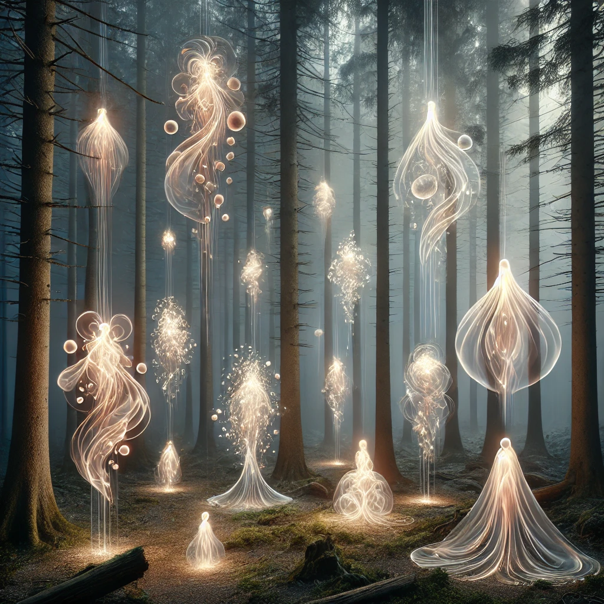

You crouch quietly in the shadows, your eyes adjusting to the surreal scene before you. Ethereal entities drift through the clearing, their forms shimmering with light and shadow. Their movements are fluid, as though they are part of the air itself, and their voices create a symphony of harmonized whispers.
Each entity seems to represent a fragment of something larger—an emotion, a memory, or a concept given form. Some glow warmly, radiating peace and understanding, while others pulse with erratic energy, their presence evoking unease.
A faint voice echoes in your mind, calm yet insistent:
“To observe is to understand. Watch them carefully, for their actions reveal truths not easily spoken. What will you choose to focus on?”
The entities continue their silent dance, offering you the opportunity to learn from their movements and energies.

What will you focus on?